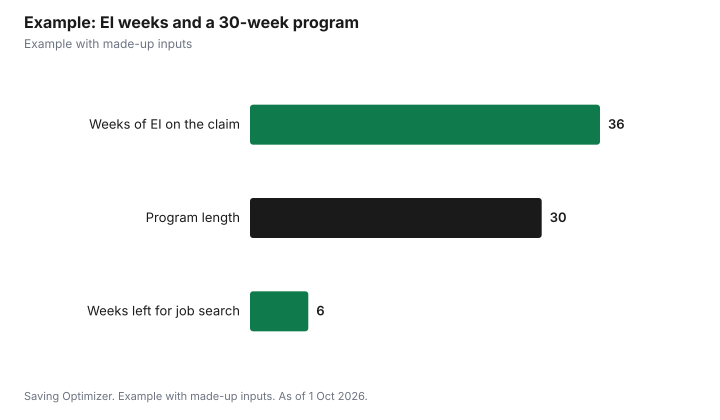

Education · Canada
EI and Going Back to School: Referred vs Non-Referred Training in 2026
You can sometimes keep Employment Insurance while you go back to school, but it depends on whether your training is referred or non-referred. Referred training is approved by Service Canada, your province or territory, or an Indigenous organization; while you attend an approved program, you may keep receiving benefits. Non-referred training is a course you choose yourself; you can keep benefits only if you stay available for work, keep job hunting and are ready to drop or change the course for a job. Either way, declare the training to Service Canada before it starts. EI will not add weeks to cover a long program, and in 2026 the most you can get is $729 a week.
Key takeaways
- Declare any course to Service Canada before it starts.
- Referred training: approved by a designated authority; you may keep benefits while attending.
- Non-referred training: you must stay available for work and keep looking.
- Long-tenured workers who pay for full-time training themselves may be referred by Service Canada.
- Benefits are not extended to cover a course that runs longer than your claim.
- Example with made-up inputs: a 30-week program on a 36-week claim leaves 6 weeks for job search.
Referred and non-referred training
ESDC says you may be able to receive benefits while taking non-referred training or referred training. Non-referred training is any course or program you choose without approval from Service Canada, your provincial or territorial government, or an Indigenous organization, including college or university courses, professional certifications and language training. If you receive regular or fishing benefits, you must remain capable of and available for work, keep looking for suitable work, and be ready to adjust or cancel the training if you get a job offer.
Referred training is approved by one of those designated authorities. Provinces, territories and Indigenous organizations can refer EI clients to training programs, including apprenticeship training, and to other activities that help them return to work. Service Canada can also make referrals in some cases, described below.
| Referred training | Non-referred training | |
|---|---|---|
| Who approves | Service Canada, a province or territory, or an Indigenous organization | No one; you choose it |
| Availability for work | Approved by a designated authority to attend | Must stay available and keep looking |
| If a job offer comes | Ask your referring authority | Must be ready to change or cancel training |
| If you leave | With good cause, benefits can continue if you are available and looking | Not applicable |
| Extra weeks for long programs | No | No |
When Service Canada can refer you
ESDC says you may be eligible for a Service Canada referral if you receive or are eligible for regular or fishing benefits, are approved to attend a program at a designated educational institution or certified institution in Canada, are a full-time student as defined by the institution, pay for the training yourself, and are a long-tenured worker. A long-tenured worker has received fewer than 36 weeks of regular or fishing benefits in the three years before the claim started and paid at least 30% of the annual maximum EI premiums in seven of the last ten years. If you are not sure, ESDC suggests applying for EI first and then calling Service Canada.
| Condition | Test |
|---|---|
| Benefits | Receiving or eligible for regular or fishing benefits |
| School | Approved for a program at a designated or certified institution in Canada |
| Course load | Full-time, as defined by the institution |
| Who pays | You pay for the training yourself |
| Long-tenured worker: past claims | Fewer than 36 weeks of regular or fishing benefits in the 3 years before the claim |
| Long-tenured worker: premiums | At least 30% of the annual maximum premiums in 7 of the last 10 years |
What to declare and when
ESDC says to declare training before the course starts, so it can confirm whether you can receive benefits. If you start first, you must stay available and keep looking for work until it confirms, and if it later finds your availability was affected, or you were not approved for referred training, you may have to repay benefits. For non-referred training, it wants the course and school name, the length and weekly hours of study, the level of the course, how to reach you, and whether you will keep looking for work and leave the course for a job. For referred training, it wants the referring counsellor's details, the start and end dates and the school. You can declare when you apply, on your EI reports, by phone, or with the Training Course Information form.
How much EI pays in 2026
Service Canada says the basic rate for most people is 55% of average insurable weekly earnings, up to a maximum. As of 1 January 2026, maximum yearly insurable earnings are $68,900, so the most you can receive is $729 a week. You can receive regular benefits for 14 to 45 weeks, depending on your region's unemployment rate and your insurable hours. EI benefits are taxable. ESDC is clear that if your training lasts longer than your weeks of benefits, no extra weeks are added to cover it.
| Item | 2026 |
|---|---|
| Benefit rate | 55% of average insurable weekly earnings |
| Maximum yearly insurable earnings | $68,900 |
| Maximum weekly benefit | $729 |
| Weeks of benefits | 14 to 45, by region and hours |
| Taxable? | Yes |
Apprentices
If your province or territory refers you to full-time technical training as part of an apprenticeship, Service Canada says you may receive regular benefits while you attend. You need a 16-digit reference code from your province, territory or training institution as proof of referral, and a new code for each block of training. You serve the one-week waiting period only once for the same apprenticeship. See apprenticeship costs and grants.
Example with made-up inputs
These numbers are an example with made-up inputs. Chris is laid off after 14 years at one employer and qualifies for 36 weeks of EI at $640 a week. Chris has never claimed EI before and has paid premiums for years, so Chris may fit the long-tenured worker test. Chris enrols full time in a 30-week college program, paying tuition personally, and declares it before classes start. If Service Canada approves the referral, Chris can keep collecting during the 30 weeks and has 6 weeks left afterward to job hunt. If not, Chris must stay available for work during the course or risk repaying benefits.
| Item | Amount |
|---|---|
| Weeks of EI on the claim | 36 |
| Weekly benefit (below the $729 maximum) | $640 |
| Program length | 30 weeks |
| Benefits during the program if referred | $19,200 |
| Weeks left after the program | 6 |

Steps
- Apply for EI first, then ask Service Canada whether you could be referred.
- If you are in Ontario, ask an Employment Ontario provider about Better Jobs Ontario.
- Get written approval or a referral before classes start, if you can.
- Declare the training to Service Canada before it starts, with the details it asks for.
- Keep reporting on your EI reports that you are in training.
- Tell Service Canada if your schedule changes or you leave the course.
For funding the course itself, see Better Jobs Ontario, the part-time Canada Student Grant and the Canada training credit.
Sources
- Employment and Social Development Canada, Employment Insurance and training programs, canada.ca (Wayback copy of the page modified 10 Nov 2025), as of 1 Oct 2026.
- Service Canada, EI regular benefits: How much you could receive, canada.ca (Wayback copy of the page modified 31 Dec 2025), as of 1 Oct 2026.
- Employment and Social Development Canada, Employment Insurance for apprentices, canada.ca (Wayback copy of the page modified 2 Jun 2026), as of 1 Oct 2026.
- The worker's claim, benefit rate and program in the example are an example with made-up inputs.
Frequently asked questions
Can I go to school while on EI?
Yes, in some cases. With referred training you may keep benefits while attending; with non-referred training you must stay available for work and keep looking.
What is referred training for EI?
Training approved by Service Canada, your province or territory, or an Indigenous organization.
Who is a long-tenured worker for EI training?
Someone who received fewer than 36 weeks of regular or fishing benefits in the 3 years before the claim and paid at least 30% of the annual maximum premiums in 7 of the last 10 years.
Will EI extend my benefits to finish a course?
No. If your training lasts longer than your weeks of benefits, no extra weeks are added.
How much is EI in 2026?
55% of average insurable weekly earnings, up to $729 a week, based on maximum insurable earnings of $68,900.
Do apprentices get EI during school?
Yes, if referred to full-time technical training. You need a 16-digit reference code for each block.
Researched and drafted with AI assistance and fact-checked against official Canadian sources. How we create content.
Disclosure: Saving Optimizer may earn a commission if a partner link is added later, such as a course offer type. No partnership is claimed on this page. Education only, not legal advice.